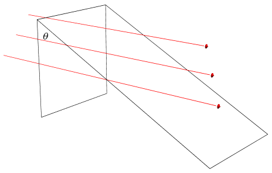

Gauss's Law
Table of Contents
1. Electric Flux
1.1. Introduction to Flux
In order to understand electric flux, it is important to attain an intuitive understanding of what flux itself is first.
Flux, put simply, is a measure for the amount of stuff that goes through a particular surface. This can be measured in different ways depending on the item you are measuring. A common metaphor for this is putting a hula hoop into rain. The surface would be the surface enclosed by the hula hoop, and the flux would be the rate of rain passing through the hula hoop per unit area.
In other words, here flux can be seen as flow rate per unit area.
1.2. Introduction to Electric Flux
Electric flux is a bit different. You can think of electric flux as the number of field lines passing through an area. Remember, field line density is directly proportional to electric field magnitude, so these two can be used interchangeably. Therefore, we can set up a little equivalency here:
\[ \frac{N}{A} \propto E \]
Here, \(N\) is the number of field lines, \(A\) is the area we are considering, \(E\) is the magnitude of the elctric field, and so \(\frac{N}{A}\) is field line density (number of lines per unit area).
Therefore, to get the total number of field lines passing through an area \(A\), we can do:
\[ N \propto EA \]
Now, this is not precisely our definition of electric flux, but it is close. The real definition is actually \(\vec{E} \cdot \vec{A}\), with a dot product:
\[ \Phi = \vec{E} \cdot \vec{A} \tag{1} \]
Firstly, this is necessary because we are working with vectors. Vectors have direction, and we need a way to deal with that.
1.2.1. Area as a Vector
One interesting thing that this brings up is that I just asserted that \(E\) and \(A\) are vectors. But how can area, which is a purely numerical statement, be a vector?
Well, it can. Area as a vector can have many interesting implications, but all we need to know right now is how it is defined. We know the magnitude of area — that's just area — but how do we know which direction it points in?
Consider an area in 3D. The direction that the area vector of this area points in must uniquely identify this area, in other words the direction in points in must have one and only one corresponding plane. The normal vector fits the bill perfectly.
Notice that a plane has two normal vectors, however — one pointing up and one pointing down. Which one do we choose?
The cross product answers this question for us. Geometrically, the cross product between two vectors is equivalent to the area of the parallelogram bounded by those two vectors. The direction of the cross product is given by the right-hand rule. The vector for our area, then, shall also be given by the right-hand rule.
In summary, the area vector is as follows: (1) it's magnitude is the area, and (2) the direction is normal to the surface, given by the right-hand rule for the vectors bounding the area.
1.2.2. The Dot Product
But why is it that we use a dot product, you ask? Well, consider how \(\vec{E} \cdot \vec{A} = \| \vec{E} \| \| \vec{A} \| \cos{\theta}\), where \(\theta\) is the angle the two vectors are making with each other.
This \(\cos{\theta}\) is key:

The claim that field line density is \(\frac{N}{A}\) here is an oversimplification. The \(A\) that we are referring to must actually be normal to the field lines for this equation to work. The diagram above shows this clearly: even though the tilted surface is larger, the number of field lines that pass through it is the same, which means the flux has to be the same.
For this to hold true, we need to consider the tilted surface exactly the same as the normal one. Here's where the\(\cos{\theta}\) comes into play. If we consider the tilted rectangle to be \(A = lw\), then the normal one would be \(A = (l \cos{\theta})w\), which means the area of the normal rectangle, \(A_{n}\), will be:
\[ A_{n} = A\cos{\theta} \]
Therefore, what the dot product is really doing is multiplying the electric field and the area together, but also taking into account if the area is tilted or not with the extra \(\cos{\theta}\) term.
1.2.3. Electric Flux on a Surface
Now that we have established that electric flux is \(\vec{E} \cdot \vec{A}\), we have to face an uncomfortable truth: in the real-world, surfaces are rarely simple 2D rectangles.
This is where calculus comes in. For complicated 3D shapes, we can model their surface areas as the sum of a bunch of infinitesimally small rectangular areas \(d\vec{A}\), and then add them all up with a surface integral. Note that this surface must be closed. A surface integral is essentially a way to integrate over the entire surface of something, and by doing so \(d\vec{A}\) we can obtain the surface area:
\[ \Phi = \iint{\vec{E} d\vec{A}} \tag{2} \]
This is also electric flux.
2. Gauss's Law
Remember that the double integral expression for electric flux, (2), holds for any closed surface. One particular closed surface of interest is the sphere. Let's imagine a sphere surrounding a central charge of \(q\) Coulombs. We know that the electric flux out of this sphere must be equivalent to the electric flux out of any other surface.
Now, the sphere is nice because we don't need to use surface integrals. Each field line is perfectly perpendicular to the surface of the sphere, and we know that the surface area of a sphere is \(4\pi r^2\). Therefore, by the definition of electric flux given by (1), we know that:
\[ \Phi = \vec{E} \cdot 4\pi r^2 = \frac{q}{4\pi\epsilon_0 r^2} \cdot 4\pi r^2 = \frac{q}{\epsilon_0} \]
As we said before, the flux through a closed surface surrounding a charge would be the same no matter what the closed surface is, as long as it is the same charge. Therefore, be equating this with (2), we obtain:
\[ \frac{q}{\epsilon_0} = \iint{\vec{E}d\vec{A}} \tag{3} \]
This result is known as Gauss's Law. Notice that by the superposition principle, this still holds for any number of charges within the enclosed surface; by this definition \(q\) is just the total charge enclosed by the surface.
2.0.1. For Continuous Charges
What if we don't have discrete charges, however? Let's say we have a continuous charge distribution with a charge density function \(\rho(x, y, z)\). Then, take tiny cubes within the surfaee of dimension \(\mathrm{d}x\), \(\mathrm{d}y\), and \(\mathrm{d}z\). Then, the charge within each of these tiny cubes would be \(\rho(x, y, z)\mathrm{d}x\mathrm{d}y\mathrm{d}z\).
Then, to calculate the total charge \(q\) inside a surface for a continuous charge distribution, we can take a triple integral in order to integrate over the volume for each of these tiny cubes:
\[ q = \iiint{\rho(x,y,z) \mathrm{d}x \mathrm{d} y \mathrm{d}z} \]
Therefore, for a continuous charge distribution, Gauss's Law can be written as:
\[ \frac{1}{\epsilon_0} \iiint{\rho(x,y,z) \mathrm{d}x \mathrm{d} y \mathrm{d}z} = \iint{\vec{E}d\vec{A}} \tag{4} \]